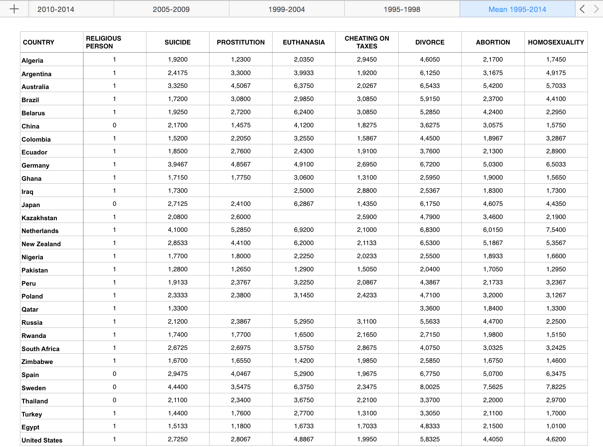

First I downloaded all the data in one spreadsheet for each variable and wave, where a mean value for each country was calculated.

A new spreadsheet was created, with a mean value for every country and variable, over all 20 years. This spreadsheet was later converted into a CSV-file.
As the data was cleaned up, I started to look for suitable d3 libraries that would help me visualize all the data in the same time and in a clear way. These were my top candidate structures:

Scatterplot

Radarchart

Parallel Coordinates
I became appealed by the idea of letting the user brush the data and set his/her own search criteria, therefore the choice fell on Parallel Coordinates. I found some non-licensed d3 libraries that I combined in order to create my visualization:

The first variable is my main question about the religiousness of the country. After that follows the "justifiable"-questions. The users are able to brush the variables to investigate every possible correlation themselves. It is also possible to edit the order of the variables. Detailes about the visualization is provided on-demand by clicking the question mark in the upper right corner.
Learnings
As for the thesis I started off with: my own visualization proved me wrong. Why people consider different things in life justifiable or not depends on much more than if you're religious or not - it is probably affected by different religions, different cultures, family values, etc. Take a look at China for example. According to this data, China doesn't consider itself a religious country. Still it has a hard time justifying homosexuality, for instance. A country and population the size of China is probably far more complex than that.
Back to the visualization